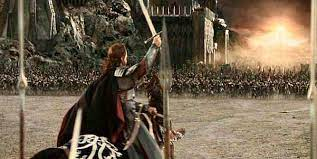

About Aragorn
Casting himself out into exhile after Isilidur failed to destroy the one ring, Aragorn took the journey of a lifetime to help destroy what his ancestor could not.
Aragorn at the Black Gate outside of Mordor
Aragorn Facts
- He has Dunedein blood, so he lives longer than normal humans
- Shows exceptional intelligence, strategy, and prowess with a sword
- Becomes the most unlikely of friends with an Elf and Dwarf, which is very rare, and remain close till the end of their days